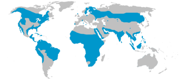
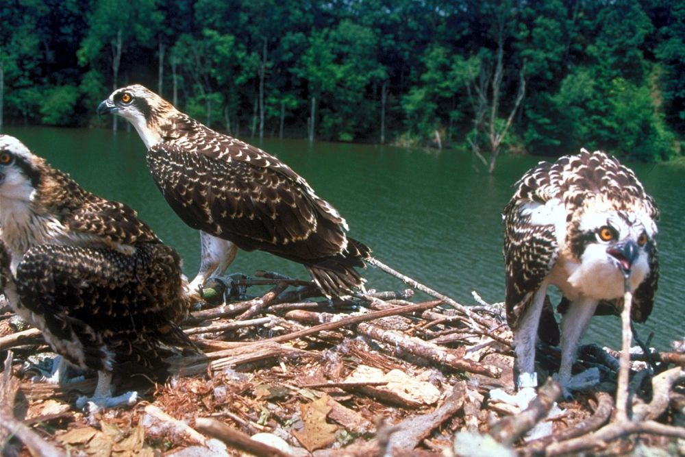

Águila Pescadora
4 subespecies reconocidas; 1 en Chile
Detalles
Osprey
| Subespecies | Pandion Haliaetis Haliaetus | P.h. corolinensis | P.h. ridgwayi | P.h. cristatus |
|---|---|---|---|---|
| Esta subespecie está presente en Eurasia, el norte del Himalaya y el norte de África. | Esta subespecie se encuentra en América y es la más grande y oscura de todas las subespecies de águila pescadora. | Esta subespecie es residente en las islas del caribe, se caracteriza por su coloración pálida y una franja oscura poco definida en el ojo. | Esta subespecie se encuentra en la costa y en algunos grandes ríos de australia y tasmania. Es el más pequeño en tamaño y se caracteriza por tener el pecho más oscuro y las plumas más oscuras en la frente y coronilla. |
Alimentacion:
Casi exclusivamente de peces vivos que busca en cuerpos de aguas calmas, ya sea en bahias marinas o en lagos y lagunas, con un vuelo lento y bajo y a veces con planeo estatico. Al avistar un pez se lanza en rapido picado, poniendo las poderosas patas por delante antes de llegar al agua para atraparlo. En algunas ocasiones se sumerge completamente para despues salir volando con el pez entre sus garras, creandose de esta manera un bellisimo espectaculo al unirse la majestuosidad del ave con su forma de alimentarse.
Reproduccion:
En el hemisferio norte. El nido esta hecho con una gran cantidad de ramas y otros materiales, unidos con hierbas y musgo, usualmente en zonas altas hasta 30 mts. Nidada normal de 3 huevos, pero puede ser entre 1 - 4.
Distribucion:
Observaciones:
Unica especie de la familia Pandionidae con cuatro subespecies aceptadas (haliaetus, carolinensis, ridgwayi y cristatus) las que se distribuyen en gran parte del mundo. El continente americano, 2 subespecies, ridgwayi y carolinensis, siendo de esta ultima raza los escasos ejemplares que llegan a Chile.
Algunos autores le dan el rango de especie a cristatus.
Caracteristico es el vuelo con el pez en las patas, ubicado de frente con una de sus patas por delante y la otra por detras, esto para disminuir el roce con el aire y poder volar con mayor facilidad.
Vocalizacion:

Águila Pescadora (Pandion haliaetus carolinensis):
